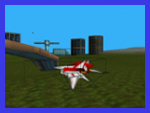
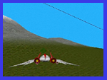
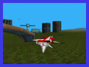
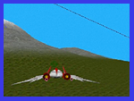
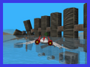
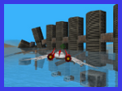

Game Developer
Hi, I'm Vincent J. Liguori, a skilled game developer and software engineer with over 10 years of experience in the industry. My expertise lies in Unity 3D, plugins, engine development, C#, C++, Lua and DirectX.
Throughout my career, I've worked with several companies to develop engaging and immersive games that captivate audiences. I'm experienced in collaborating with teams of designers, artists, and programmers to create top-quality games that meet and exceed expectations. My strong problem-solving skills and ability to work under tight deadlines have allowed me to consistently deliver high-quality results. Additionally, I have extensive experience developing a serious game engine used for simulation-based training scenarios that teach users how to operate subsea equipment. This experience has broadened my expertise and allowed me to excel in delivering engaging, high-quality games across various genres.
Having earned a Bachelor's and Master's degree in Computer Science, I bring a strong foundation in programming and software development to my work. My diverse background includes a wide range of projects and technology which equips me with the necessary skills to tackle any challenge in the game development field. As a versatile and committed professional, I look forward to contributing my knowledge and skills to any development team.
 




 
